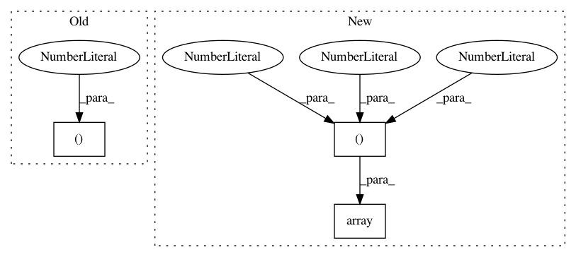

a80068c8e68fbef2bbabfa2793d95fd9c40492de,softlearning/environments/gym/mujoco/hopper_env.py,,,#,6
Before Change
DEFAULT_CAMERA_CONFIG = {
"trackbodyid": 2,
"distance": 3.0,
"lookat": (None, None, 1.15),
"elevation": -20.0,
}
After Change
DEFAULT_CAMERA_CONFIG = {
"trackbodyid": 2,
"distance": 3.0,
"lookat": np.array((0.0, 0.0, 1.15)),
"elevation": -20.0,
}
In pattern: SUPERPATTERN
Frequency: 3
Non-data size: 3
Instances
Project Name: rail-berkeley/softlearning
Commit Name: a80068c8e68fbef2bbabfa2793d95fd9c40492de
Time: 2019-02-04
Author: hartikainen@berkeley.edu
File Name: softlearning/environments/gym/mujoco/hopper_env.py
Class Name:
Method Name:
Project Name: rail-berkeley/softlearning
Commit Name: a80068c8e68fbef2bbabfa2793d95fd9c40492de
Time: 2019-02-04
Author: hartikainen@berkeley.edu
File Name: softlearning/environments/gym/mujoco/humanoid_env.py
Class Name:
Method Name:
Project Name: rail-berkeley/softlearning
Commit Name: a80068c8e68fbef2bbabfa2793d95fd9c40492de
Time: 2019-02-04
Author: hartikainen@berkeley.edu
File Name: softlearning/environments/gym/mujoco/walker2d_env.py
Class Name:
Method Name: